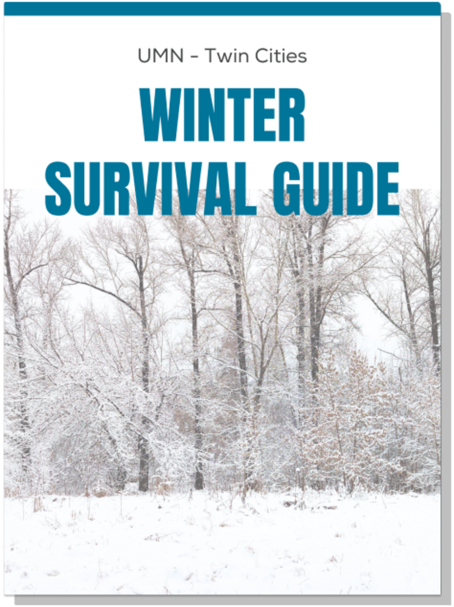
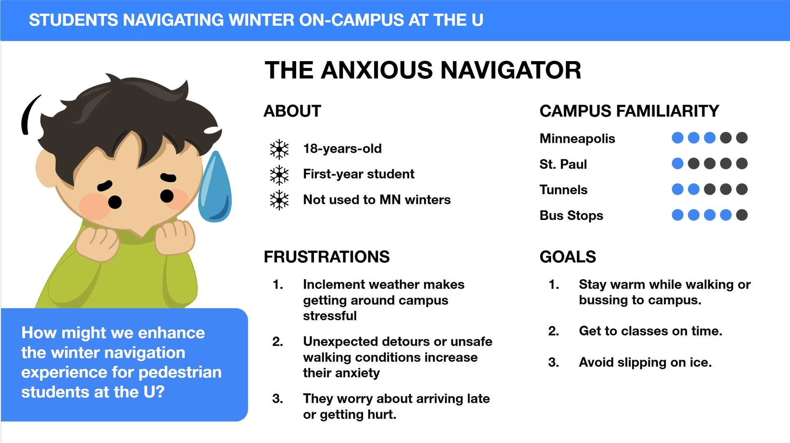

Winter Survival Guide
Research-driven information design for campus winter safety

Overview
Design a practical winter safety and navigation guide for students commuting in cold conditions on the campus of University of Minnesota. The project focuses on reducing winter-related health risks, transportation anxiety, and route uncertainty through clear visual communication.
Target Audience:
College students navigating harsh winter conditions, especially first-year students and students unfamiliar with campus winter routes.
My Role:
UX research, information design, visual system design, and front-end prototype implementation.
Tools Used:
Figma (interactive prototype), Canva (layout composition and visual polish), research survey tools.
Research & Insights
User research was conducted through interviews, contextual observations, and survey synthesis.
Key Pain Points
- Winter commuting introduces a time penalty, as students often leave earlier and move slower to avoid ice and cold exposure.
- Students experience transportation anxiety due to bus crowding, delays, and exposure while waiting outside.
- Slip hazards from ice and uneven surfaces are the most common safety concern.
- There is a strong desire for accessible warm spaces, including tunnels and heated waiting areas.
Opportunity Themes
- Provide actionable, campus-specific safety guidance rather than generic winter advice.
- Reduce cognitive load when planning winter travel.
- Improve familiarity with alternative indoor routes such as tunnel systems.
- Support students with mobility sensitivity and anxiety around winter navigation.
Problem Statement
Students commuting during winter conditions need a clear, practical way to navigate campus safely because winter weather increases travel uncertainty, physical risk, and time stress.
User Persona

Design & Execution
Visual Communication Strategy
The guide was designed as a digital pamphlet-style survival manual, balancing readability with personality.
- Chunked information hierarchy for fast scanning
- Action-oriented safety instructions
- Illustration-supported guidance
- Minimal cognitive overload despite dense safety content
- Seasonal thematic visuals while maintaining clarity
The layout was first composed in Canva to refine composition and then translated into a functional interactive prototype.
Front-End Interaction
The prototype is built as a flip-style digital magazine, allowing users to browse the guide sequentially.
- Page-turn navigation supports the pamphlet metaphor
- Content is revealed one section at a time to prevent information saturation
- The format encourages exploration while keeping the experience lightweight
Accessibility considerations included:
- High contrast text hierarchy
- Large tappable navigation areas
- Clear instructional language
- Reduction of decorative clutter around actionable information
Flip Through Prototype
Key Design Decisions
Safety-Focused Information Architecture
- When to seek medical help
- How to recognize frostbite and hypothermia risks
- Walking safety mechanics
- Transit planning strategies
Visual Hierarchy
- Titles and hazard warnings are visually emphasized
- Checklist-style sections support quick decision-making
- Technical information simplified into behavioral rules (e.g., layering system, walking posture tips)
Mobility-Aware Navigation Concepts
- Fast route strategies
- Tunnel usage guidance
- Transit delay preparation
- Low-risk walking practices


Reflection
What Worked
- Strong integration of research insights into actionable design content
- Clear, polished visual storytelling suitable for digital presentation
- Prototype interaction reinforced the pamphlet concept
What I Would Refine
- Incorporate more quantitative user data and direct quotes
- Expand accessibility research, particularly for students with mobility limitations
- Explore real-time data integration for future iterations